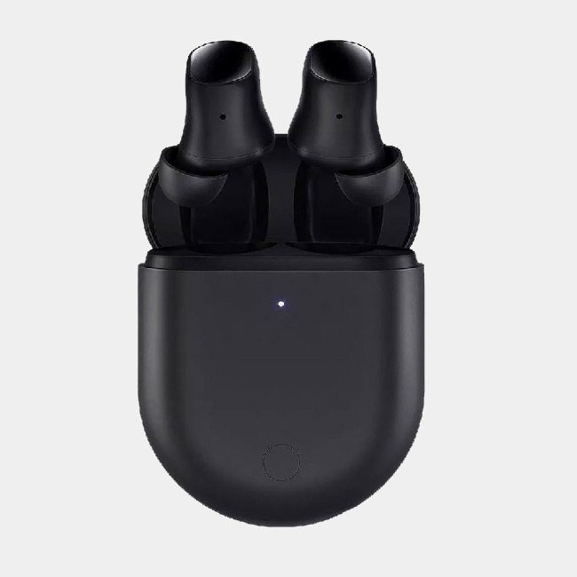

<!DOCTYPE html>
<html lang="ru">
    <meta http-equiv="Content-Type" content="text/html" charset="utf-8">
    <title>Samsung</title>
    <link rel="stylesheet" href="css/Xyxi.css">
    <link rel="stylesheet" href="css/all.css">
    <link rel="preconnect" href="https://fonts.googleapis.com">
    <link rel="preconnect" href="https://fonts.gstatic.com" crossorigin>
    <link href="https://fonts.googleapis.com/css2?family=Lora&family=Radio+Canada:wght@300;400&display=swap" rel="stylesheet">
</html>
<body>

    <nav  id="mainNav">
        <div class="layer2"></div>
        <div class="layer1">
            <ul id="navbar">
                <li><a href="main.html">Главная</a></li>
                <li><a href="Catalog.html">Каталог</a></li>
                <li><a href="Info.html">Информация</a></li>
                <li><a href="Contact.html">Контакты</a></li>
            </ul>
        </div>
    </nav>

    <header id="mainHeader" class="hea">
        <h1 > Наушники XIAOMI Redmi Buds 3 Pro </h1>
    </header>

    <article id="mainArticle">
            <div>
                <div class="layerx"></div>
                <div class="layer4">
                   <h2 align="left">Краткие характеристики:</h2>
                   <h3 align="left">беспроводные наушники с микрофоном;  </h3> 
                   <h3 align="left">внутриканальные портативные; Bluetooth; 20-20000 Гц; ;</h3>
                   <h3 align="left">время работы 6 ч; с кейсом 28 ч; активное шумоподавление</h3>
                </div>
                <div  id="cin"><h3>199 р.</h3> <a href="Order.html" >купить</a></div>
            </div>
    </article>

    <main id="mainMain">
        <h1>Внешний вид</h1>
        <div class="imgscale">
            
            
        </div>
        <h1>Описание</h1>
            <p>XIAOMI Redmi Buds 3 Pro – беспроводные наушники черного цвета с системой интеллектуального шумоподавления. Модель оснащена двумя микрофонами: один – для отслеживания внешнего шума, а второй для обратной связи. Вместе они обеспечивают глубину шумоподавления до 35 дБ: вы будете наслаждаться чистым звучанием музыки в метро, кафе, парках и др. публичных местах. При этом вы сможете настроить глубину шумоподавления в зависимости от предпочтений, а алгоритм ИИ будет автоматически настраивать работу системы в зависимости от окружающей обстановки.</p>
            <p>Наушники XIAOMI Redmi Buds 3 Pro гарантируют и чистый звук при разговоре. Лишние шумы будут отсечены, и собеседник будет слышать только ваш голос. Модель оснащена композитным драйвером с диафрагмой 9 мм, который обеспечивает чистоту высокочастотных и глубину низкочастотных звуков.</p>
            <p>XIAOMI Redmi Buds 3 Pro получили энергоэффективный чип. На одном заряде наушники смогут проработать до 6 часов, а вместе с кейсом – до 28 часов. Модель поддерживает быструю проводную и беспроводную зарядку. Наушники могут быть подключены к двум устройствам одновременно, обладают системой автоматического обнаружения в ухе. Гаджет имеет класс влагозащиты IPX4 и не боится пота и брызг.</p>
    </main>

    <footer id="mainFooter" class="foooter">
        <div class="footer__content ">
            <div class="wid"></div>
            <div class="footer__social">
                <a href="AboutUS.html">О Нас</a>
                <a href="Contact.html">Контакты</a>
                <a href="https://vk.com/ia_prosto_hochy_pizzy" class="vka"></a>
                <a href="https://www.instagram.com/sebas.domashni" class="insta"></a>
            </div>
            <div class="wid"></div>
        </div>
    </footer>

</body>